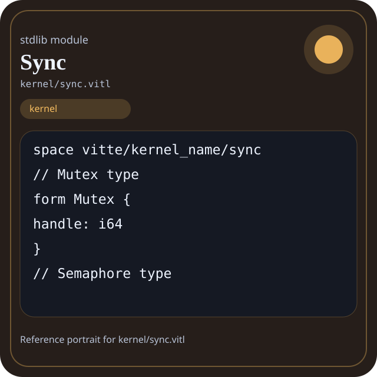

Stdlib module kernel/sync.vitl
This page is a wiki-style reference for one concrete stdlib file. It explains what the file owns, where it fits in the family, and how to decide whether this is the right surface to depend on.

kernel/sync.vitl.Family: kernel
Kind: public stdlib surface
Page style: this reference follows the same “encyclopedic card + portrait + usage contract” logic as the keyword pages, but for stdlib modules.
Summary
- Overview
- Purpose
- Taxonomy
- Implementation profile
- Top-level API inventory
- Position in family
- Declaration map
- Representative signatures
- How to use this module
- User example
- Keyword coverage
- Source shape
- Source landmarks
- Source organization
- Complete API catalog
- Integration boundaries
- Composition guidance
- Relationship table
- Neighbor modules
Overview
| Field | Value |
|---|---|
| Path | kernel/sync.vitl |
| Family | kernel |
| Kind | public stdlib surface |
| Line count | 230 |
| Declared procedures | 34 |
| Declared forms/picks | 6 |
`kernel/sync.vitl` is a public stdlib surface inside the `kernel` family. It should be read as one focused slice of the broader family responsibility: System-facing runtime helpers such as process, scheduler, threads, sync, users, signals, network, device, and memory.
Purpose
This file should be chosen because of responsibility, not because its name “sounds close enough”. Inside the kernel family, it carries one focused part of the contract and keeps that responsibility separate from neighboring concerns.
- A service manager may use scheduler, process, and signals while keeping policy in separate code.
- A network-facing runtime should explain why it depends on kernel surfaces instead of lighter families.
Taxonomy
Think of this page as a generated encyclopedia entry rather than a hand-written tutorial. The goal is to show what kind of module this is, how dense it is, and what reading strategy makes sense before depending on it.
- Large algorithm surface: this file exposes many procedures and likely acts as a domain toolkit rather than a single thin wrapper.
- Owns domain vocabulary: the module declares data shapes in addition to executable helpers, so its types are part of the contract.
- Has tuning constants: part of the module behavior is controlled by named constants that document default precision, limits, or policy.
- Minimal top-level dependencies: the module reads as mostly self-contained from its opening declarations.
- Explicit export surface: the file ends with visible export declarations instead of relying only on implicit namespace discovery.
Implementation profile
This profile is inferred directly from the source text. It does not replace reading the file, but it tells you quickly whether the module is mostly declarative, loop-heavy, branch-heavy, or organized around many small exits.
| Signal | Count | What it suggests |
|---|---|---|
if | 0 | Branching density and local decision-making. |
while | 0 | Loop-heavy or iterative implementation style. |
for | 0 | Collection-style traversal at source level. |
match | 0 | Variant-driven branching or grammar-style decoding. |
let | 0 | Local state and intermediate value density. |
give | 34 | Number of explicit exit points and result shaping. |
Top-level API inventory
| Surface | Items |
|---|---|
| Procedures | pthread_mutex_create, pthread_mutex_lock, pthread_mutex_unlock, pthread_mutex_trylock, pthread_mutex_timedlock, pthread_mutex_destroy, sem_create, sem_wait, sem_trywait, sem_timedwait, sem_post, sem_getvalue |
| Forms | Mutex, Semaphore, Lock, CondVar, Barrier, RWLock |
| Picks | none declared at top level |
| Constants | PTHREAD_MUTEX_NORMAL, PTHREAD_MUTEX_RECURSIVE, PTHREAD_MUTEX_ERRORCHECK |
| Exports | * |
Imported surfaces
This file does not advertise a top-level `use` surface in its opening declarations. That often means it is either self-contained or an aggregation layer.
Position in family
This file is module 10 of 12 in the kernel family when ordered by path. By procedure count it ranks 4, and by line count it ranks 4. Those ranks are useful as rough signals of breadth, not as quality judgments.
Declaration map
The declaration map turns raw source into a scan-friendly catalog. It is useful when the file is large enough that a reader wants to orient by kinds of surfaces first.
| Line | Name | Kind | Role |
|---|---|---|---|
| 1 | vitte/kernel_name/sync | space | Declares the namespace that anchors this file in the stdlib tree. |
| 9 | Mutex | form | Introduces a structured data shape that other procedures can exchange. |
| 14 | Semaphore | form | Introduces a structured data shape that other procedures can exchange. |
| 19 | Lock | form | Introduces a structured data shape that other procedures can exchange. |
| 24 | CondVar | form | Introduces a structured data shape that other procedures can exchange. |
| 29 | Barrier | form | Introduces a structured data shape that other procedures can exchange. |
| 34 | RWLock | form | Introduces a structured data shape that other procedures can exchange. |
| 39 | PTHREAD_MUTEX_NORMAL | const | Defines a named constant reused across the module. |
| 40 | PTHREAD_MUTEX_RECURSIVE | const | Defines a named constant reused across the module. |
| 41 | PTHREAD_MUTEX_ERRORCHECK | const | Defines a named constant reused across the module. |
| 47 | pthread_mutex_create | proc | Owns coordination, scheduling, or concurrency behavior. |
| 51 | pthread_mutex_lock | proc | Owns coordination, scheduling, or concurrency behavior. |
| 56 | pthread_mutex_unlock | proc | Owns coordination, scheduling, or concurrency behavior. |
| 61 | pthread_mutex_trylock | proc | Owns coordination, scheduling, or concurrency behavior. |
| 66 | pthread_mutex_timedlock | proc | Owns coordination, scheduling, or concurrency behavior. |
| 71 | pthread_mutex_destroy | proc | Owns coordination, scheduling, or concurrency behavior. |
| 80 | sem_create | proc | Represents one top-level surface in the file contract and should be read as part of the module boundary. |
| 84 | sem_wait | proc | Represents one top-level surface in the file contract and should be read as part of the module boundary. |
| 89 | sem_trywait | proc | Represents one top-level surface in the file contract and should be read as part of the module boundary. |
| 94 | sem_timedwait | proc | Represents one top-level surface in the file contract and should be read as part of the module boundary. |
| 99 | sem_post | proc | Represents one top-level surface in the file contract and should be read as part of the module boundary. |
| 104 | sem_getvalue | proc | Represents one top-level surface in the file contract and should be read as part of the module boundary. |
| 109 | sem_destroy | proc | Represents one top-level surface in the file contract and should be read as part of the module boundary. |
| 118 | pthread_cond_create | proc | Represents one top-level surface in the file contract and should be read as part of the module boundary. |
| 122 | pthread_cond_wait | proc | Represents one top-level surface in the file contract and should be read as part of the module boundary. |
| 127 | pthread_cond_timedwait | proc | Represents one top-level surface in the file contract and should be read as part of the module boundary. |
| 132 | pthread_cond_signal | proc | Represents one top-level surface in the file contract and should be read as part of the module boundary. |
| 137 | pthread_cond_broadcast | proc | Represents one top-level surface in the file contract and should be read as part of the module boundary. |
| 142 | pthread_cond_destroy | proc | Represents one top-level surface in the file contract and should be read as part of the module boundary. |
| 151 | pthread_barrier_create | proc | Represents one top-level surface in the file contract and should be read as part of the module boundary. |
| 155 | pthread_barrier_wait | proc | Represents one top-level surface in the file contract and should be read as part of the module boundary. |
| 160 | pthread_barrier_destroy | proc | Represents one top-level surface in the file contract and should be read as part of the module boundary. |
| 169 | pthread_rwlock_create | proc | Represents one top-level surface in the file contract and should be read as part of the module boundary. |
| 173 | pthread_rwlock_rdlock | proc | Represents one top-level surface in the file contract and should be read as part of the module boundary. |
| 178 | pthread_rwlock_wrlock | proc | Represents one top-level surface in the file contract and should be read as part of the module boundary. |
| 183 | pthread_rwlock_tryrdlock | proc | Represents one top-level surface in the file contract and should be read as part of the module boundary. |
| 188 | pthread_rwlock_trywrlock | proc | Represents one top-level surface in the file contract and should be read as part of the module boundary. |
| 193 | pthread_rwlock_unlock | proc | Represents one top-level surface in the file contract and should be read as part of the module boundary. |
| 198 | pthread_rwlock_destroy | proc | Represents one top-level surface in the file contract and should be read as part of the module boundary. |
| 207 | pthread_spin_create | proc | Represents one top-level surface in the file contract and should be read as part of the module boundary. |
| 211 | pthread_spin_lock | proc | Represents one top-level surface in the file contract and should be read as part of the module boundary. |
| 216 | pthread_spin_unlock | proc | Represents one top-level surface in the file contract and should be read as part of the module boundary. |
| 221 | pthread_spin_trylock | proc | Represents one top-level surface in the file contract and should be read as part of the module boundary. |
| 226 | pthread_spin_destroy | proc | Represents one top-level surface in the file contract and should be read as part of the module boundary. |
The table is exhaustive for top-level declarations of the selected kinds. This file declares 44 matching surfaces.
Representative signatures
These signatures are shown in source order so the page keeps the feel of a reference manual, not just a keyword cloud.
form Mutex {(line 9)form Semaphore {(line 14)form Lock {(line 19)form CondVar {(line 24)form Barrier {(line 29)form RWLock {(line 34)const PTHREAD_MUTEX_NORMAL: i32 = 0(line 39)const PTHREAD_MUTEX_RECURSIVE: i32 = 1(line 40)const PTHREAD_MUTEX_ERRORCHECK: i32 = 2(line 41)proc pthread_mutex_create() -> Mutex {(line 47)proc pthread_mutex_lock(mutex: Mutex) -> int {(line 51)proc pthread_mutex_unlock(mutex: Mutex) -> int {(line 56)proc pthread_mutex_trylock(mutex: Mutex) -> int {(line 61)proc pthread_mutex_timedlock(mutex: Mutex, timeout_ms: i64) -> int {(line 66)proc pthread_mutex_destroy(mutex: Mutex) -> int {(line 71)proc sem_create(initial_value: int) -> Semaphore {(line 80)proc sem_wait(sem: Semaphore) -> int {(line 84)proc sem_trywait(sem: Semaphore) -> int {(line 89)
The list is intentionally capped here; the source file declares 43 matching signatures in total.
How to use this module
Start by reading the file as an ownership boundary. Ask three questions: what enters this module, what stable types or procedures it exports, and what adjacent module should stay outside of it.
- Read
spaceand top-level imports first so the ownership boundary ofkernel/sync.vitlis explicit. - Scan constants before procedures; they often encode precision, limits, or policy assumptions that explain later behavior.
- Read declared forms and picks before algorithms so the data vocabulary is stable in your head.
- Traverse procedures in source order; the early helpers usually explain the naming and numeric conventions used later.
- Use the source landmarks section below as a table of contents when the file is large.
User example
This example is generated from the actual stdlib module surface. Its job is not to be the smallest snippet possible; its job is to show a realistic consumer-shaped file that exercises the module and mirrors the language keywords the module itself relies on.
space demo/kernel_sync
const SAMPLE_LABEL: string = "demo"
form UserReport {
label: string,
ready: bool
}
proc run_example() -> UserReport {
give UserReport { label: "ok", ready: ready }
}
export run_exampleKeyword coverage
This table makes the “all keywords of the module” requirement auditable. It compares the detected Vitte keywords in the source file with the generated consumer example above.
| Keyword | Present in module source | Used in generated user example |
|---|---|---|
space | yes | yes |
const | yes | yes |
form | yes | yes |
proc | yes | yes |
give | yes | yes |
at | yes | no |
export | yes | yes |
Keywords still not exercised directly in the generated snippet: at. The page still lists them here so the gap is visible.
Source shape
space vitte/kernel_name/sync
// Mutex type
form Mutex {
handle: i64
}
// Semaphore type
form Semaphore {
handle: i64
}
// Lock typeThe excerpt is not meant to replace the file. It exists to make the module recognizable at first glance, the same way a Wikipedia infobox helps the reader orient before reading the whole article.
Source landmarks
Large files are easier to retain when they have visible landmarks. When the source contains explicit section banners, they are surfaced here; otherwise the first major declarations are used as anchors.
- Synchronization — Mutexes, Semaphores, Locks / Thread synchronization primitives
- Mutex Operations
- Semaphore Operations
- Condition Variable Operations
- Barrier Operations
- Reader-Writer Lock Operations
- Spin Lock Operations
Source organization
When a file carries its own internal chaptering, those chapters usually reveal the intended reading order better than a flat symbol list. This section reconstructs that organization from the source itself.
Opening declarations
Top-level items: 1. Procedures: 0. Data surfaces: 0. Constants: 0.
First visible names: vitte/kernel_name/sync
Synchronization — Mutexes, Semaphores, Locks / Thread synchronization primitives
Top-level items: 9. Procedures: 0. Data surfaces: 6. Constants: 3.
First visible names: Mutex, Semaphore, Lock, CondVar, Barrier, RWLock, PTHREAD_MUTEX_NORMAL, PTHREAD_MUTEX_RECURSIVE, PTHREAD_MUTEX_ERRORCHECK
Mutex Operations
Top-level items: 6. Procedures: 6. Data surfaces: 0. Constants: 0.
First visible names: pthread_mutex_create, pthread_mutex_lock, pthread_mutex_unlock, pthread_mutex_trylock, pthread_mutex_timedlock, pthread_mutex_destroy
Semaphore Operations
Top-level items: 7. Procedures: 7. Data surfaces: 0. Constants: 0.
First visible names: sem_create, sem_wait, sem_trywait, sem_timedwait, sem_post, sem_getvalue, sem_destroy
Condition Variable Operations
Top-level items: 6. Procedures: 6. Data surfaces: 0. Constants: 0.
First visible names: pthread_cond_create, pthread_cond_wait, pthread_cond_timedwait, pthread_cond_signal, pthread_cond_broadcast, pthread_cond_destroy
Barrier Operations
Top-level items: 3. Procedures: 3. Data surfaces: 0. Constants: 0.
First visible names: pthread_barrier_create, pthread_barrier_wait, pthread_barrier_destroy
Reader-Writer Lock Operations
Top-level items: 7. Procedures: 7. Data surfaces: 0. Constants: 0.
First visible names: pthread_rwlock_create, pthread_rwlock_rdlock, pthread_rwlock_wrlock, pthread_rwlock_tryrdlock, pthread_rwlock_trywrlock, pthread_rwlock_unlock, pthread_rwlock_destroy
Spin Lock Operations
Top-level items: 6. Procedures: 5. Data surfaces: 0. Constants: 0.
First visible names: pthread_spin_create, pthread_spin_lock, pthread_spin_unlock, pthread_spin_trylock, pthread_spin_destroy, *
Complete API catalog
This catalog is the exhaustive file-level index for the module. It is intentionally closer to a generated encyclopedia appendix than to a tutorial summary.
Constants
| Line | Name | Signature | Role |
|---|---|---|---|
| 39 | PTHREAD_MUTEX_NORMAL | const PTHREAD_MUTEX_NORMAL: i32 = 0 | Defines a named constant reused across the module. |
| 40 | PTHREAD_MUTEX_RECURSIVE | const PTHREAD_MUTEX_RECURSIVE: i32 = 1 | Defines a named constant reused across the module. |
| 41 | PTHREAD_MUTEX_ERRORCHECK | const PTHREAD_MUTEX_ERRORCHECK: i32 = 2 | Defines a named constant reused across the module. |
Data surfaces
| Line | Name | Signature | Role |
|---|---|---|---|
| 9 | Mutex | form Mutex { | Introduces a structured data shape that other procedures can exchange. |
| 14 | Semaphore | form Semaphore { | Introduces a structured data shape that other procedures can exchange. |
| 19 | Lock | form Lock { | Introduces a structured data shape that other procedures can exchange. |
| 24 | CondVar | form CondVar { | Introduces a structured data shape that other procedures can exchange. |
| 29 | Barrier | form Barrier { | Introduces a structured data shape that other procedures can exchange. |
| 34 | RWLock | form RWLock { | Introduces a structured data shape that other procedures can exchange. |
Procedures
| Line | Name | Signature | Role |
|---|---|---|---|
| 47 | pthread_mutex_create | proc pthread_mutex_create() -> Mutex { | Owns coordination, scheduling, or concurrency behavior. |
| 51 | pthread_mutex_lock | proc pthread_mutex_lock(mutex: Mutex) -> int { | Owns coordination, scheduling, or concurrency behavior. |
| 56 | pthread_mutex_unlock | proc pthread_mutex_unlock(mutex: Mutex) -> int { | Owns coordination, scheduling, or concurrency behavior. |
| 61 | pthread_mutex_trylock | proc pthread_mutex_trylock(mutex: Mutex) -> int { | Owns coordination, scheduling, or concurrency behavior. |
| 66 | pthread_mutex_timedlock | proc pthread_mutex_timedlock(mutex: Mutex, timeout_ms: i64) -> int { | Owns coordination, scheduling, or concurrency behavior. |
| 71 | pthread_mutex_destroy | proc pthread_mutex_destroy(mutex: Mutex) -> int { | Owns coordination, scheduling, or concurrency behavior. |
| 80 | sem_create | proc sem_create(initial_value: int) -> Semaphore { | Represents one top-level surface in the file contract and should be read as part of the module boundary. |
| 84 | sem_wait | proc sem_wait(sem: Semaphore) -> int { | Represents one top-level surface in the file contract and should be read as part of the module boundary. |
| 89 | sem_trywait | proc sem_trywait(sem: Semaphore) -> int { | Represents one top-level surface in the file contract and should be read as part of the module boundary. |
| 94 | sem_timedwait | proc sem_timedwait(sem: Semaphore, timeout_ms: i64) -> int { | Represents one top-level surface in the file contract and should be read as part of the module boundary. |
| 99 | sem_post | proc sem_post(sem: Semaphore) -> int { | Represents one top-level surface in the file contract and should be read as part of the module boundary. |
| 104 | sem_getvalue | proc sem_getvalue(sem: Semaphore) -> int { | Represents one top-level surface in the file contract and should be read as part of the module boundary. |
| 109 | sem_destroy | proc sem_destroy(sem: Semaphore) -> int { | Represents one top-level surface in the file contract and should be read as part of the module boundary. |
| 118 | pthread_cond_create | proc pthread_cond_create() -> CondVar { | Represents one top-level surface in the file contract and should be read as part of the module boundary. |
| 122 | pthread_cond_wait | proc pthread_cond_wait(cond: CondVar, mutex: Mutex) -> int { | Represents one top-level surface in the file contract and should be read as part of the module boundary. |
| 127 | pthread_cond_timedwait | proc pthread_cond_timedwait(cond: CondVar, mutex: Mutex, timeout_ms: i64) -> int { | Represents one top-level surface in the file contract and should be read as part of the module boundary. |
| 132 | pthread_cond_signal | proc pthread_cond_signal(cond: CondVar) -> int { | Represents one top-level surface in the file contract and should be read as part of the module boundary. |
| 137 | pthread_cond_broadcast | proc pthread_cond_broadcast(cond: CondVar) -> int { | Represents one top-level surface in the file contract and should be read as part of the module boundary. |
| 142 | pthread_cond_destroy | proc pthread_cond_destroy(cond: CondVar) -> int { | Represents one top-level surface in the file contract and should be read as part of the module boundary. |
| 151 | pthread_barrier_create | proc pthread_barrier_create(count: int) -> Barrier { | Represents one top-level surface in the file contract and should be read as part of the module boundary. |
| 155 | pthread_barrier_wait | proc pthread_barrier_wait(barrier: Barrier) -> int { | Represents one top-level surface in the file contract and should be read as part of the module boundary. |
| 160 | pthread_barrier_destroy | proc pthread_barrier_destroy(barrier: Barrier) -> int { | Represents one top-level surface in the file contract and should be read as part of the module boundary. |
| 169 | pthread_rwlock_create | proc pthread_rwlock_create() -> RWLock { | Represents one top-level surface in the file contract and should be read as part of the module boundary. |
| 173 | pthread_rwlock_rdlock | proc pthread_rwlock_rdlock(rwlock: RWLock) -> int { | Represents one top-level surface in the file contract and should be read as part of the module boundary. |
| 178 | pthread_rwlock_wrlock | proc pthread_rwlock_wrlock(rwlock: RWLock) -> int { | Represents one top-level surface in the file contract and should be read as part of the module boundary. |
| 183 | pthread_rwlock_tryrdlock | proc pthread_rwlock_tryrdlock(rwlock: RWLock) -> int { | Represents one top-level surface in the file contract and should be read as part of the module boundary. |
| 188 | pthread_rwlock_trywrlock | proc pthread_rwlock_trywrlock(rwlock: RWLock) -> int { | Represents one top-level surface in the file contract and should be read as part of the module boundary. |
| 193 | pthread_rwlock_unlock | proc pthread_rwlock_unlock(rwlock: RWLock) -> int { | Represents one top-level surface in the file contract and should be read as part of the module boundary. |
| 198 | pthread_rwlock_destroy | proc pthread_rwlock_destroy(rwlock: RWLock) -> int { | Represents one top-level surface in the file contract and should be read as part of the module boundary. |
| 207 | pthread_spin_create | proc pthread_spin_create() -> Lock { | Represents one top-level surface in the file contract and should be read as part of the module boundary. |
| 211 | pthread_spin_lock | proc pthread_spin_lock(spinlock: Lock) -> int { | Represents one top-level surface in the file contract and should be read as part of the module boundary. |
| 216 | pthread_spin_unlock | proc pthread_spin_unlock(spinlock: Lock) -> int { | Represents one top-level surface in the file contract and should be read as part of the module boundary. |
| 221 | pthread_spin_trylock | proc pthread_spin_trylock(spinlock: Lock) -> int { | Represents one top-level surface in the file contract and should be read as part of the module boundary. |
| 226 | pthread_spin_destroy | proc pthread_spin_destroy(spinlock: Lock) -> int { | Represents one top-level surface in the file contract and should be read as part of the module boundary. |
Exports
| Line | Name | Signature | Role |
|---|---|---|---|
| 230 | * | export * | Re-exports surfaces that the module wants to expose as part of its public boundary. |
Integration boundaries
Within kernel, this file should remain focused. If a future helper changes the host boundary, scheduling boundary, or data-shape boundary, it probably belongs in a neighbor module instead of being added here by convenience.
- Family responsibility: System-facing runtime helpers such as process, scheduler, threads, sync, users, signals, network, device, and memory.
- Family architecture role: Use `kernel` when the program explicitly models system services, scheduling, process behavior, or device-facing coordination.
Composition guidance
Choose this module when
- Choose
kernel/sync.vitlwhen the main question is owned by this module rather than by transport, storage, orchestration, or user-interface code. - A service manager may use scheduler, process, and signals while keeping policy in separate code.
- A network-facing runtime should explain why it depends on kernel surfaces instead of lighter families.
Pause before extending it when
- Avoid extending this file when the new helper mostly changes the boundary to host I/O, runtime coordination, or foreign integration instead of staying inside
kernel. - Check nearby modules such as
kernel/device.vitl,kernel/fileio.vitl,kernel/interrupt.vitlbefore adding convenience wrappers here.
Relationship table
This table keeps the page closer to a real encyclopedia entry: a module is easier to understand when compared with its nearest alternatives in the same family.
| Neighbor | Procedures | Data surfaces | Why compare it |
|---|---|---|---|
kernel/device.vitl | 0 | 0 | Shares the same family boundary but carries a distinct slice of responsibility. |
kernel/fileio.vitl | 44 | 2 | Shares the same family boundary but carries a distinct slice of responsibility. |
kernel/interrupt.vitl | 9 | 0 | Shares the same family boundary but carries a distinct slice of responsibility. |
kernel/memory.vitl | 18 | 1 | Shares the same family boundary but carries a distinct slice of responsibility. |
kernel/network.vitl | 42 | 4 | Shares the same family boundary but carries a distinct slice of responsibility. |
kernel/process.vitl | 14 | 2 | Shares the same family boundary but carries a distinct slice of responsibility. |
kernel/scheduler.vitl | 1 | 0 | Shares the same family boundary but carries a distinct slice of responsibility. |
kernel/signals.vitl | 18 | 1 | Shares the same family boundary but carries a distinct slice of responsibility. |